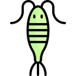

Leedsichthys
Máy Hút Bụi Đại Dương kỷ Jura
Tổng quan
Kỷ
Jurassic
Họ
Pachycormidae
Chi
Leedsichthys
Dài
16 m
Nặng
45 tấn
Thức ăn


Leedsichthys là một loài cá khổng lồ của họ Pachycormidae, một nhóm cá xương Đại Trung Sinh đã sinh sống ở các đại dương giữa kỷ Jura. Những hóa thạch đầu tiên của Leedsichthys được xác định vào thế kỷ 19 ở Anh.
Nguồn: wikipedia.org
Phân bố
Khu vực biển châu Âu và phía Nam châu Mỹ
Thông tin thêm về Leedsichthys
Kỷ nguyên và phân bố
Qua phân tích hóa thạch, các nhà cổ sinh vật học biết được rằng Leedsichthys là một loài cá khổng lồ của họ Pachycormidae đã tuyệt chủng, một nhóm cá xương Đại Trung Sinh đã sinh sống ở các đại dương giữa kỷ Jura, cách đây khoảng 144-189 triệu năm trước. Các nhà khoa học đã tìm thấy hóa thạch của Leedsichthys ở nhiều địa điểm khác nhau. Chúng bao gồm Anh, Bắc Đức, Chile và Pháp. Hóa thạch bị phân mảnh cũng đã được tìm thấy ở Argentina.
Tên khoa học
Leedsichthys nghĩa là "Cá Leeds", được đặt tên năm 1989 để vinh danh công lao của Ngài Alfred Nicholson Leeds, nhà cổ sinh vật học đã phát hiện ra hóa thạch đầu tiên của chi này. Loài đầu tiên và duy nhất của chi này là Leedsichthys Problematicus. Tên loài đề cập đến khó khăn mà các nhà khoa học đã trải qua trong việc tái tạo lại loài cá khổng lồ này.
Kích thước
Trong "Walking with Sea Monsters" do BBC quay, chiều dài cơ thể của cá Leeds được đặt ở mức 28 mét, đạt kích cỡ của cá voi xanh. Trong quá khứ, vì sự thiếu hụt thông tin nên việc ước lượng chiều dài của loài cá này đã thay đổi rất nhiều, ban đầu từ 9 m, rồi đến 27 m, 30 m và hiện đã được thống nhất là 16 m. Ngoài ra, chúng còn có tốc độ bơi tầm 11 dặm/giờ (17,8 km/giờ) và có tuổi thọ khá cao so với các loài cá khác (hơn 45 năm).
Ngoại hình
Leedsichthys có một cái đầu tương đối lớn và thon dài. Nó có thể có mõm, nhưng điều này không được ghi lại trong các hóa thạch được phát hiện cho đến nay. Từ hóa thạch của loài cá cổ đại này, rõ ràng là nó có các tia vây bằng xương. Leedsichthys có hai vây ngực ở phía dưới cơ thể. Chúng lớn và thon dài với một đường cong nhẹ sang một bên. Chúng cũng có vây lưng và vây hậu môn hình tam giác, nhưng không có vây bụng.

Chế độ ăn
Cá Leeds là một loài ăn lọc và chúng sống giống như cá mập voi và cá mập bream ngày nay, bơi quanh biển với miệng mở suốt cả ngày. Loài cá này có thể nuốt hàng trăm gallon nước biển chỉ trong một ngụm vào khoang miệng với các sinh vật phù du, tảo, sứa, cá nhỏ, tôm, v.v., và sau đó nước biển được lọc qua mang của chúng. Cá Leeds có cấu trúc mang đặc biệt hoạt động như một bộ lọc để giữ thức ăn. Để có thể ăn nhiều hơn, cá Leeds cũng lặn xuống đáy đại dương để khuấy động trầm tích để tìm kiếm thức ăn.
Khám phá
Hóa thạch Leedsichthys được phát hiện lần đầu tiên ở Anh vào thế kỷ 19 bởi một nhà quý tộc tên là Alfred Nicholson Leeds. Trong một hố loam ( hố đất có thành phần chủ yếu là cát, bùn và một lượng nhỏ đất sét) gần Peterborough, Leeds đã tìm thấy những mẫu hóa thạch khổng lồ. Vào tháng 5 năm 1886, John Whitaker Hulk, sau khi nhìn thấy những hóa thạch được tìm thấy bởi Leeds, đã nghĩ rằng nó thuộc về một loài khủng long trong gia đình Stegosaurus (kiếm long).
Vào ngày 22 tháng 8 năm 1888, Marsh, một nhà cổ sinh vật học nổi tiếng người Mỹ được mời đến nhà của Leeds và đã khẳng định đây là một loài cá khổng lồ thời tiền sử chứ không phải khủng long. Hai tháng sau, nhà nghiên cứu sinh vật học Arthur Smith Woodward đã tới gõ cửa nhà của Leeds. Là một chuyên gia về ichthyology (ngư học), Woodward đã đặt tên cho loài cá khổng lồ cổ đại này là Leedsichthys problematicus vào năm sau(1889).
Môi trường sống
Cá Leeds sống trong thời kì Trái Đất tồn tại nhiều sinh vật cổ đại nổi tiếng, bao gồm Phân lớp Cúc đá, Metriorhynchus, Ophthalmosaurus, Liopleurodon, Plesiosaurus...
Trong mắt của nhiều loài động vật, loài cá Leeds sở hữu thân hình to lớn nhưng không hung dữ giống như một bao tải thực phẩm dự trữ di động. Các hóa thạch của loài cá này thường có xuất hiện các vết cắn của các loài thằn lằn biển Metriorhynchus và Liopleurodon, bởi vậy để một con cá Leeds phát triển từ trứng đến khi đạt kích thước 16 mét quả là một điều không hề đơn giản và tỉ lệ thành công dường như rất thấp bởi chúng chưa kịp lớn thì đã thành miếng mồi ngon cho những loài khác.